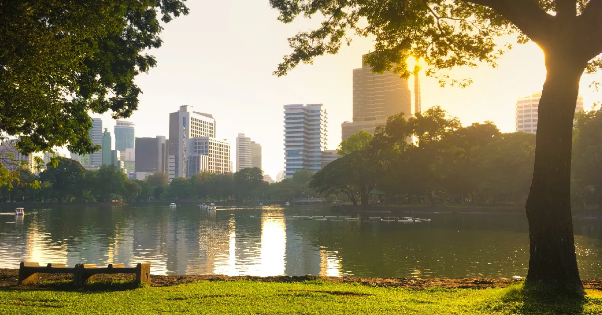
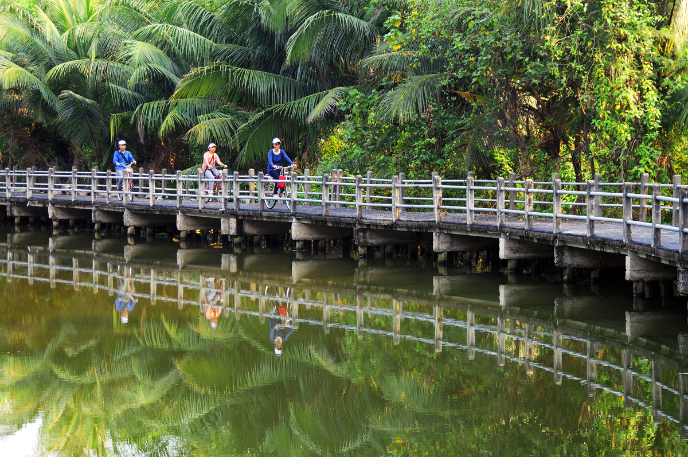
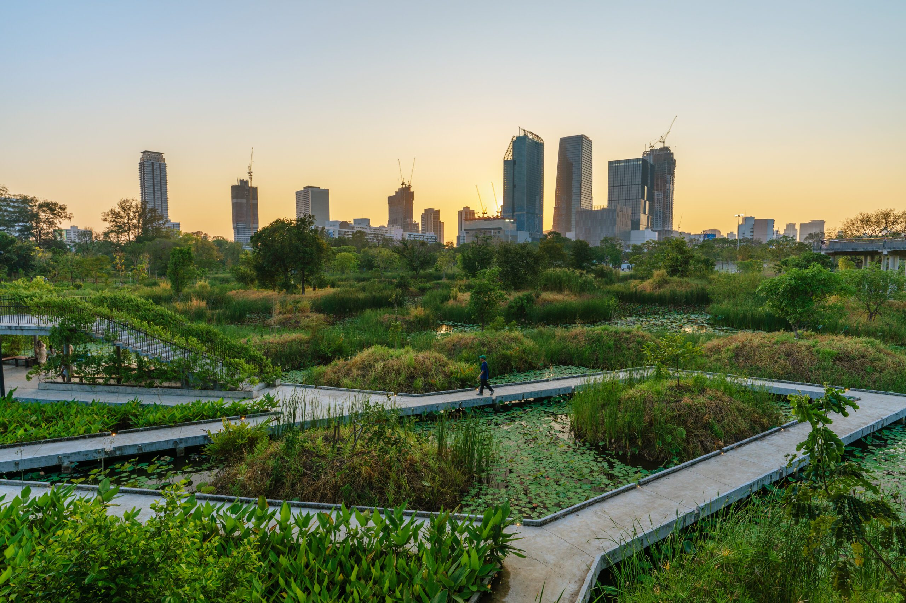
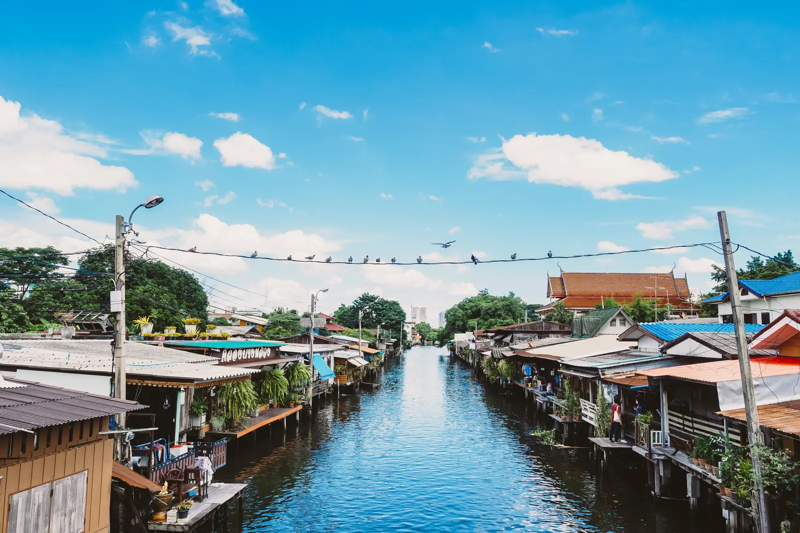

แหล่งท่องเที่ยวธรรมชาติในกรุงเทพมหานคร

สวนลุมพินี
สวนสาธารณะใจกลางกรุงเทพ
เหมาะสำหรับพักผ่อน ออกกำลังกาย และเดินเล่น
เป็นพื้นที่สีเขียวสำคัญของเมือง

บางกะเจ้า
ปอดของกรุงเทพฝั่งพระประแดง
เต็มไปด้วยธรรมชาติและเส้นทางจักรยาน
เหมาะสำหรับการท่องเที่ยวเชิงอนุรักษ์

สวนเบญจกิติ
สวนสาธารณะสมัยใหม่ริมทะเลสาบ
มี Skywalk และเส้นทางเดินชมธรรมชาติ
เหมาะกับการถ่ายภาพและพักผ่อน

สวนวชิรเบญจทัศ (สวนรถไฟ)
สวนขนาดใหญ่ทางตอนเหนือของกรุงเทพ
มีพื้นที่สีเขียวกว้างขวางและสวนผีเสื้อ
เหมาะกับการพักผ่อนแบบครอบครัว

คลองบางหลวง
แหล่งท่องเที่ยวเชิงวัฒนธรรมริมคลอง
สัมผัสวิถีชีวิตชุมชนดั้งเดิม
ผสมผสานธรรมชาติและวัฒนธรรมไทย